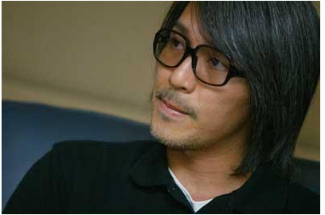
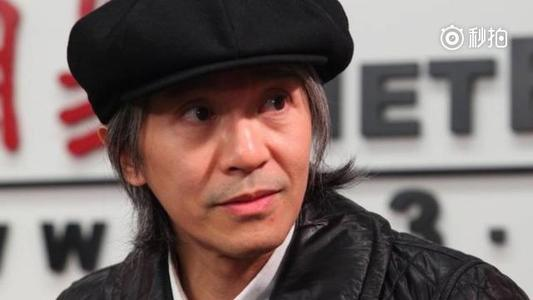
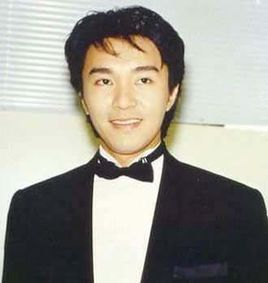
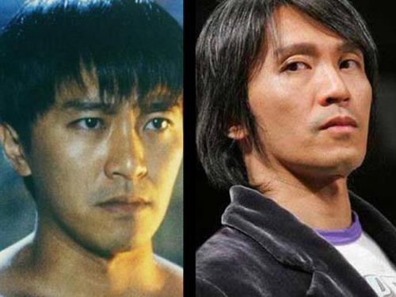

周星驰
周星驰,英文名Stephen Chiau Sing Chi，1962年6月22日生，昵称星爷、星仔，香港著名男艺人、演员、导演、监制、编剧，广东省政协委员，香港喜剧电影巨星
生平经历
1980年，时年18岁的周星驰在丽的电视（亚洲电视前身）当特约演员而入行，首次于青春电视剧《I.Q.成熟时》演出，同时兼职办公室助理。
1990年，周星驰担当低成本电影《赌圣》的主角，票房高达41,326,156港元，首破香港影史纪录，周星驰凭着这部电影奠定了巨星的地位。
1991年，周星驰担当主角的《逃学威龙》，票房高达43,829,449港元，第二次大破香港影史纪录。这时他的票房号召力与成龙、周润发并驾齐驱，三人更被喻为“双周一成”，周星驰开始被媒体公开称为“星爷”。
2004年推出《功夫》，香港票房收入61,278,697港元，打破《少林足球》所创下的香港华语片票房纪录。该片亦创下印度、泰国、印尼、马来西亚、新加坡、菲律宾、台湾、香港、卡达、约旦、阿曼、科威特、巴林、安哥拉、白俄罗斯、斯洛维尼亚、罗马尼亚、西班牙、葡萄牙、匈牙利、挪威、爱沙尼亚、墨西哥、玻利维亚、委内瑞拉、哥伦比亚、巴拿马、哥斯达黎加、多米尼加、牙买加、库拉索、乌拉圭等数十个国家和地区的华语电影票房纪录。周星驰以该片获得第42届金马奖最佳导演、最佳剧情片，并且入围第63届金球奖最佳外语片、英国电影学院奖最佳外语片和获得美国广播电影协会奖最佳外语片。
2016年3月，周星驰监制、编剧及导演的电影《美人鱼》以全球5.55亿美元票房成为世界史上最高票房的非好莱坞电影。
主要成就
- 美国《人物》杂志评周星驰为“全球最有趣男明星”。至今唯一一位华人获此殊荣
- 韩国汉城亚太国际电影节以威龙闯天关获得“亚太影帝”
- 威尼斯国际电影节将《食神》列入“观摩电影”
- 威尼斯国际电影节举办以他的名字命名的“周星驰周”，将他的旧作在影展期间逐日重温。至今唯一一位华人获此殊荣的体育报纸和欧洲杯的创办者《队报》头版以“亚洲足球还没有结束！”为标题，大篇幅介绍了周星驰和他的新作《少林足球》。《队报》空前的高度评价使得周星驰在欧洲名声大噪，仿佛成了一位足球巨星。远在地球另一头的中国足协破天荒的邀请周星驰出任“中国女足全球形象大使”。至今唯一一位登上《队报》的华人非体育明星
- 《少林足球》被日本蓝丝带奖评为“最佳外语片”，领奖人：导演周星驰
- 加拿大多伦多国际电影节将《功夫》选为“2004年度开幕电影”，首部华人执导的电影成为开幕电影。
- 周星驰凭《功夫》获荷兰阿姆斯特丹国际奇幻电影节最高奖项"Silver Scream Award"，至今唯一一位华人导演在国际型奇幻电影节上获奖
- 波士顿电影评论学会大奖“最佳外语片”：《功夫》（周星驰）
- 芝加哥电影评论学会大奖“最佳外语片”：《功夫》（周星驰）
- 佛罗里达电影评论学会大奖“最佳外语片”：《功夫》（周星驰）
- 拉斯维加斯电影评论学会大奖“最佳外语片”：《功夫》（周星驰）
- 菲尼克斯电影评论学会大奖“最佳外语片”：《功夫》（周星驰）
- 美国东南电影评论学会大奖“最佳外语片”：《功夫》（周星驰）
- 美国MTV电影奖“最佳武打”：周星驰
- 美国《时代周刊》评《功夫》为“十佳电影”
- 美国《人物》杂志评周星驰为“全球最热门单身男明星”
- 周星驰凭《功夫》获评论家选择奖“最佳外语片”，至今仅有两位亚洲导演获奖
- 周星驰凭《功夫》获金球奖最佳外语片提名，至今仅有四位中国导演获提名
- 周星驰凭《功夫》获卫星奖最佳外语片提名
- 周星驰凭《功夫》获美国“金卷轴奖”最佳外语片提名
- 周星驰凭《功夫》获英国电影学院奖最佳外语片提名
- 周星驰凭《长江7号》获瑞士国际电影节“Audience Award”
- 全球最知名的电影批评网站“烂番茄”评选出21世纪全球各类型电影的TOP10，全部榜单中仅有5部华语电影，周星驰凭《少林足球》和《功夫》成为唯一有两部作品上榜的亚洲导演
- 《时代周刊》美国版评出“世界电影史上25部最佳体育电影”，《少林足球》是上榜的两部足球电影之一，周星驰是唯一榜上有名的亚洲导演
主要作品
| 1988 | 霹雳先锋 |
| 1988 | 最佳女婿 |
| 1990 | 赌圣 |
| 1990 | 无敌幸运星 |
| 1990 | 赌侠 |
| 1991 | 逃学威龙 |
| 1991 | 情圣 |
| 1991 | 整蛊专家 |
| 1991 | 赌侠2之上海滩赌圣 |
| 1992 | 家有囍事 |
| 1992 | 逃学威龙2 |
| 1992 | 鹿鼎记 |
| 1993 | 逃学威龙3之龙过鸡年 |
| 1993 | 唐伯虎点秋香 |
| 1993 | 济公 |
| 1994 | 九品芝麻官 |
| 1994 | 国产凌凌漆 |
| 1995 | 百变星君 |
| 1996 | 食神 |
| 1999 | 喜剧之王 |
| 2001 | 少林足球 |
| 2004 | 功夫 |
| 2008 | 长江七号 |
| 2013 | 西游降魔篇 |
| 2016 | 美人鱼 |
| 2017 | 西游伏魔篇 |
生活照




影响
BBC专访周星驰时，BBC称他是李小龙和成龙之后又一位华裔国际巨星。不过，周星驰却很谦虚地回答：“有点不同，我更注重幕后的工作。”事实上，《功夫》共获得海内、外22个电影奖项和33项提名，而海外奖项和海外票房一样占了8成以上。在此之前，周星驰早已作为版权所有人将《少林足球》海外版权卖出了2000万美元的高价，他亦独占《时代》和《纽约时报》的封面。
电影大师奥利弗·斯通公开表示：“我连续看了三部周星驰的电影，很喜欢他。我也喜欢很多中国导演，但是叫不上来他们的名字……”金庸更是和周星驰私交甚密：“我很敬佩周星驰先生，我和他是好朋友。”“他最近新推的片子《功夫》，我看过了，非常好，寓意很深刻。捧腹大笑之后，还饶有哲理的余味。”金酸莓奖创始人约翰·威尔森亦公开表示：“周星驰很棒，我爱死《功夫》了。看完《功夫》之后我想去看他其他的作品，他很有想象力，拍出来的东西能够一下子击中别人的想法。其他的中国导演我就了解不多，我希望尽快看到周星驰的新电影。”
2002年9月22日，《纽约时报》邀请周星驰作为封面人物时，称他是“从香港光着脚来的汤姆·汉克斯”。周星驰则称自己“只是一个电影人”。亦有欧洲媒体称周星驰为国际巨星。
周星驰在电影中所采用的独特文化，多年来亦经常成为学者的研究对象，影响遍及内地和海外各处。